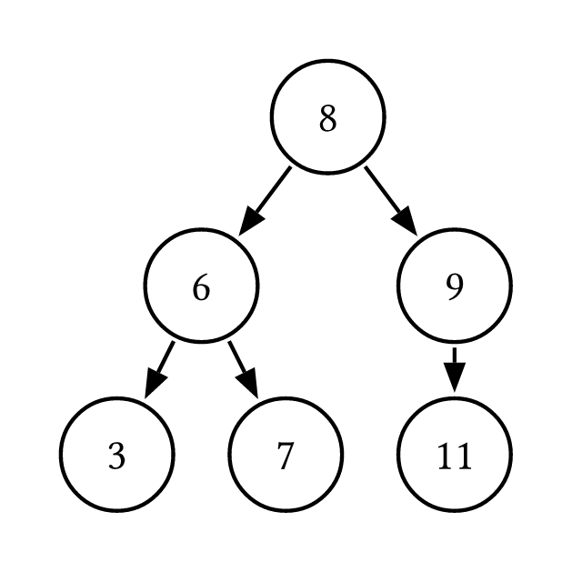

If node A has node B has a child, node A is said to be node B's parent.
The highest node in the hierarchy is the root node of the tree.
Nodes that have no children are said to be leaf nodes.
A subtree is a smaller tree that is part of a larger tree.